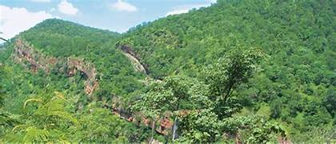

Uma Maheshwaram Temple

Uma Maheshwaram Temple is a serene and ancient shrine located near Rangapur village in Achampet mandal of Nagarkurnool district, Telangana. Dedicated to Lord Shiva (Maheshwara) and Goddess Parvati (Uma), the temple is believed to date back to the 2nd century CE and is known as the northern gateway to the famous Srisailam Jyotirlinga. Nestled deep within the Nallamala forest, the temple is set against scenic hills and natural caves. The main deity here is a unique Shiva Linga that displays two colors—white on one side and red on the other. A sacred stream called Papanasanam flows near the temple, and it is believed that bathing in its waters washes away sins. Uma Maheshwaram is often called the "Poor Man's Ooty" because of its cool climate and lush greenery. The temple attracts devotees, trekkers, and nature lovers alike, offering both spiritual solace and breathtaking natural beauty.
Sri Lalitha Someswara Swamy Temple, Somasila

Sri Lalitha Someswara Swamy Temple, located at Somasila in Nagarkurnool district, Telangana, is an ancient and revered temple dedicated to Lord Shiva. Believed to have been constructed in the 7th century, the temple stands on the scenic banks of the Krishna River. The temple complex comprises 15 shrines, each showcasing intricate carvings and stone architecture that reflect the rich heritage of the region. Originally situated in a lower area, the temple was carefully relocated to its present site, stone by stone, during the construction of the Srisailam Dam to protect it from submergence. The temple comes alive during festivals like Maha Shivaratri, Karthika Purnima, and Krishna Pushkaralu, attracting thousands of devotees. Pilgrims believe a dip in the river's sacred waters before darshan purifies the soul. The serene setting, with boating facilities and riverside cottages, makes Somasila an ideal spot for spiritual retreats, picnics, and nature lovers seeking peace and scenic beauty.
Nallamala Forest
Nallamala Forest is one of the largest and most biodiverse forest regions in southern India, spreading across Telangana and Andhra Pradesh. It forms part of the mighty Eastern Ghats and is home to the Nagarjunasagar-Srisailam Tiger Reserve, India's largest tiger reserve. The forest is a treasure trove of rich flora and fauna, sheltering tigers, leopards, sloth bears, wild boars, deer, and a variety of birds and reptiles. With deep valleys, dense teak and bamboo groves, and meandering streams, Nallamala offers breathtaking natural beauty. Sacred sites like Srisailam Temple and Uma Maheshwaram Temple lie within its expanse, drawing both pilgrims and nature lovers. Trekking, wildlife spotting, and eco-tourism activities are popular here. The forest plays a vital role in maintaining the ecological balance and supporting tribal communities who depend on its resources. Nallamala's untouched wilderness makes it a haven for adventure, spirituality, and conservation.